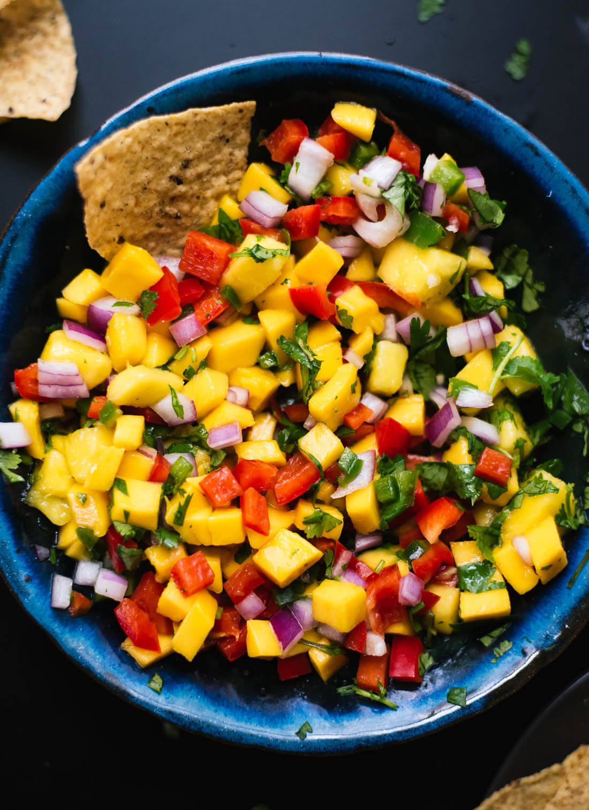

Mango Salsa

Fresh Mango Salsa
This simple and colorful mango salsa is super easy to make! It’s sweet, spicy and absolutely delicious. Serve
this fresh mango salsa with chips, on tacos or salads, or as a salad itself. It’s that good. Recipe yields about
3 cups salsa.
Ingredients
- 3 ripe mangoes, diced
- 1 medium bell pepper, chopped
- 1/2 cup chopped red onion
- 1/4 cup packed fresh cilantro leaves, chopped
- 1 jalapeno, seeded and minced
- 1 large lime, juiced
- salt, to taste
Steps
- In a serving bowl, combine the prepared mango, bell pepper, onion, cilantro and jalapeño. Drizzle with the
juice of one lime.
- Using a large spoon, stir the ingredients together. Season to taste with salt, and stir again. For best
flavor, let the salsa rest for 10 minutes or longer.